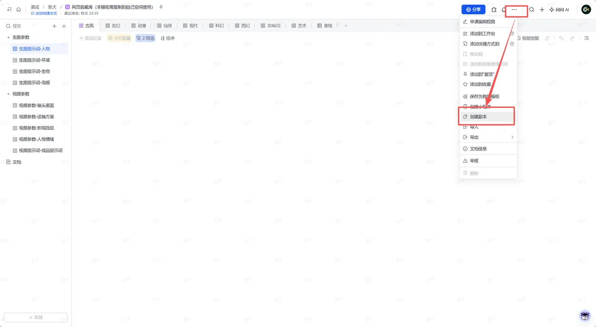
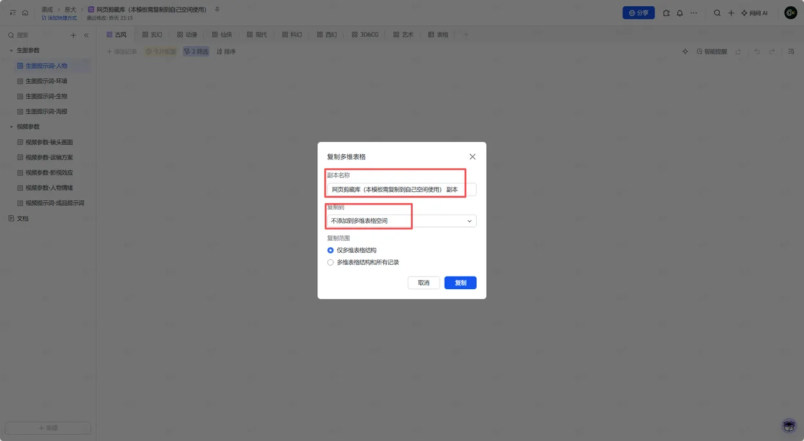
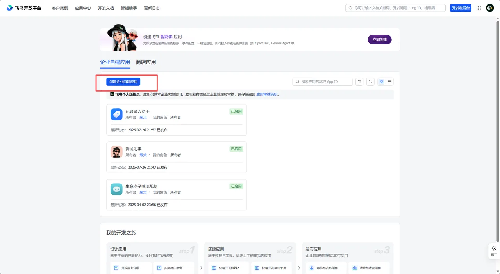
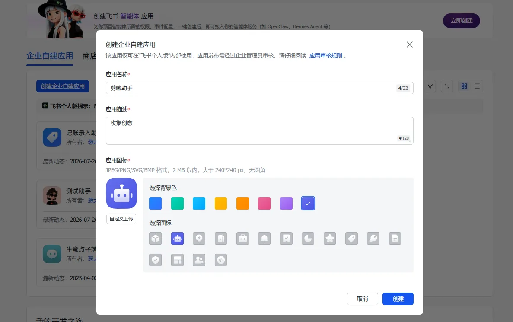
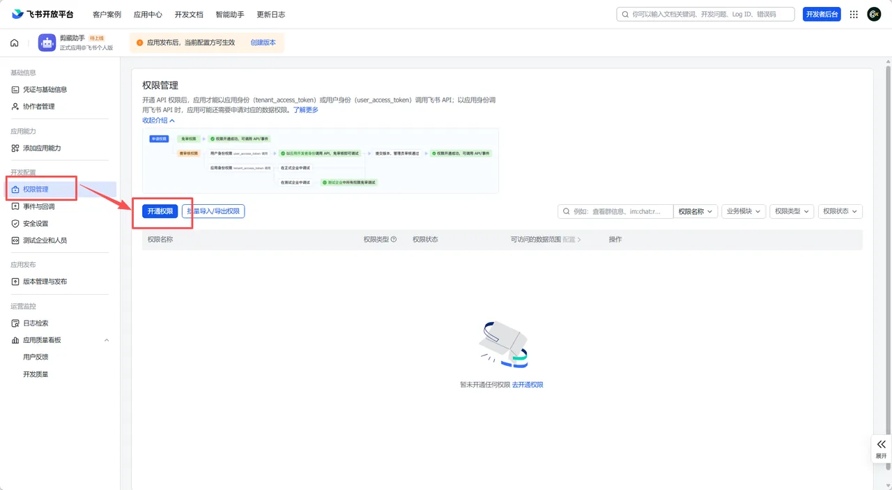
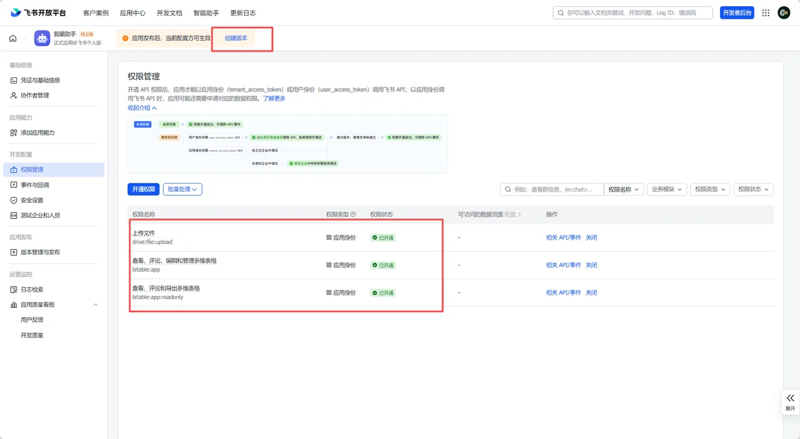
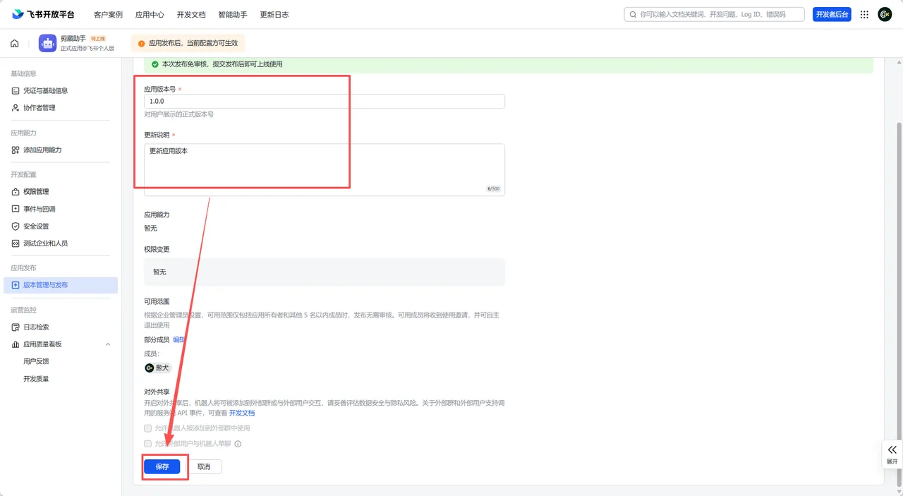
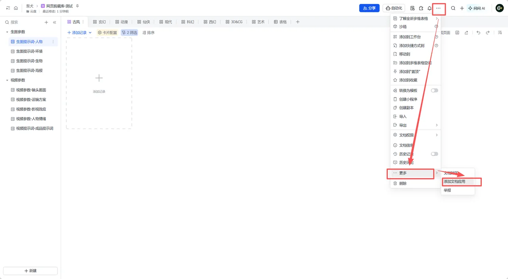
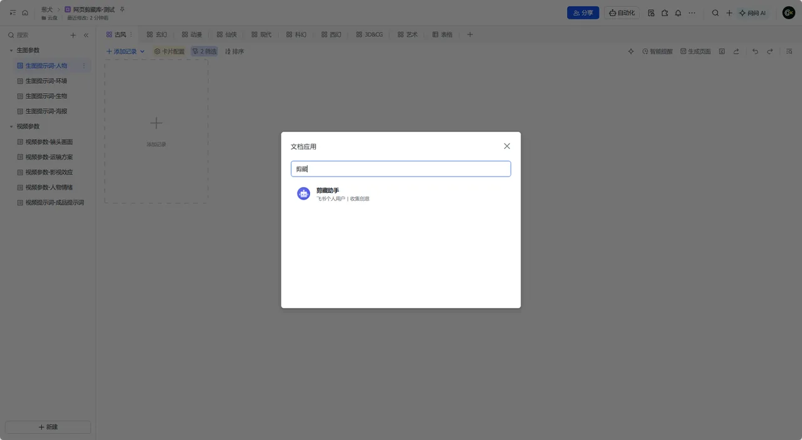
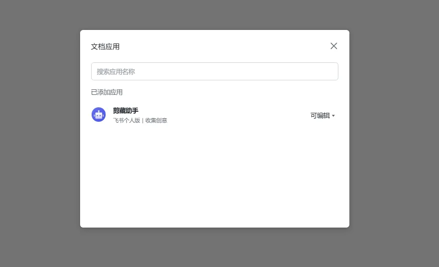

连接飞书，定好分类。把喜欢的图片和提示词，放在触手可及的地方。
第一次使用？先在飞书侧完成下面 5 步，约 5 分钟，只需配置一次。
打开网页剪藏库模板 ↗，在右上角「…」中选择「创建副本」。名称可自定义，建议不加入多维表格空间，复制范围选「仅复制表格结构」即可。模板是只读母版，剪藏只能写入你的副本。


打开飞书开放平台 ↗，点击「创建企业自建应用」，名称和描述随意填写。进入应用后，在左侧「权限管理」→「开通权限」中开通 bitable:app、bitable:app:readonly、drive:file:upload 三个权限。
bitable:app
bitable:app:readonly
drive:file:upload




权限开通后点击「创建版本」，版本号和更新说明随意填写，保存并确认发布——未发布的应用无法调用接口。发布后在「凭证与基础信息」页复制 App ID 和 App Secret，稍后填入下方「03 飞书连接」。

打开你的多维表副本，右上角「…」→「更多」→「添加文档应用」，搜索刚创建的应用并添加，确保权限状态为「可编辑」。跳过这一步，保存剪藏时会报无权限。



把副本地址栏的完整链接填入「02 收藏位置」，App ID 和 App Secret 填入「03 飞书连接」，点击底部「保存设置」。随后可在「04 分类与模型」点「从飞书同步选项」读取表里的风格与模型，确认后再保存一次，即可开始剪藏。
截图来自发布者维护的在线图文说明 ↗，飞书界面更新时以在线版为准；以上截图均可点击放大查看。
选择保存提示词的多维表格。
支持完整 /base/ 链接或 app_token；剪藏时按分类自动写入对应数据表，无需指定表。
三级分类与数据表
同步与调整分类
「可直接复制提示词」「风格码」为带 AI 配置的文本字段，「工作台分类」为单选字段，由飞书侧处理，插件不填写。「标题」「内容」为文本，「链接」为链接字段，「封面」为附件，由插件按剪藏内容填写。
成品视频：支持网页中可直接读取的 MP4 视频，提供预览和来源选择。勾选「同时保存视频」后，可保存到任意分类；目标子表需有「视频」附件字段，也兼容「成品视频」「参考视频」。视频与封面分开保存，单个视频最多 30MB，超过 20MB 自动分片上传。
候选图片可横向浏览，不会向下挤占提示词区域。「上一步」可返回编辑，Esc 或右上角 × 可收起浮层；在同一页面再次点击插件图标会保留草稿。刷新、跳转网页会结束当前草稿。浏览器设置页等受限页面无法打开浮层，请在普通网页使用。
使用你的企业自建应用。
凭据仅保存在本机浏览器中，用于连接飞书。
在 飞书开放平台 ↗ 创建企业自建应用，开通 bitable:app、bitable:app:readonly、drive:file:upload 三个权限并发布版本；逐步图文指引见「01 配置指南」。
三级分类体系，决定剪藏时可选什么、写到哪里。
本地规则匹配，不调用模型接口、不分析图片或视频；明确的分类会预先选好，手动改过的分类会保留。
读取各绑定子表的风格与模型选项（只读，不修改飞书表格）。先保存「02 收藏位置」与「03 飞书连接」再同步；飞书表格的选项更新后，再同步一次即可。
配套桌面应用「提示词助手」：本插件负责“存”，它负责“用”——在电脑桌面随手复制已剪藏的提示词。
剪藏写入哪张表，助手就同步哪张表——在浏览器里收藏灵感，回桌面随手取用。
只收藏你想留下的。